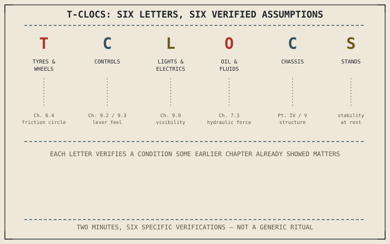

T-CLOCS — tyres and wheels, controls, lights and electrics, oil and other fluids, chassis, and stands — is a widely used pre-ride check acronym, and Chapter 10.1 already explained why an acronym like this works at all: each letter maps to a system this book has shown depends on a specific set of physical conditions holding true. A pre-ride check isn't a generic safety ritual; it's a fast, structured verification that those specific conditions are actually met before a ride begins.
Chapter 10.1 closed by naming the pre-ride check as this chapter's subject. This chapter covers T-CLOCS directly, and why each item earns its place in it.
Tyres and Wheels: Verifying the Friction Circle's Starting Size
Chapter 6.4 established the friction circle as the ceiling on every braking, cornering, and accelerating force a motorcycle can generate, and Chapter 6.5 showed tyre pressure directly setting that circle's size. A pre-ride tyre and wheel check — pressure, tread depth, visible damage, and wheel security — is a direct verification that the friction circle a rider is about to depend on for the entire ride actually matches what this book's techniques assume, rather than a smaller, degraded circle from a slow leak or worn tread nobody's checked recently.
Controls, Lights, and Fluids: Verifying the Systems Behind Every Technique
The controls check verifies the clutch, throttle, and brake lever feel Chapter 9.2 and Chapter 9.3 built entire techniques around actually behave the way those techniques assume; the lights and electrics check verifies the visibility Chapter 9.9's traffic positioning depends on for being seen by other drivers; the oil and fluids check verifies the lubrication Chapter 3's engine chapters described as essential, and the brake fluid condition Chapter 7.3 established as directly setting hydraulic force transmission. Each T-CLOCS letter maps to a specific chapter's assumption, which is exactly why skipping one isn't a minor convenience — it's proceeding without verifying a specific thing this book has shown actually matters.
T-CLOCS isn't an arbitrary acronym — each letter verifies a specific physical condition a chapter elsewhere in this book has shown some technique or force calculation actually depends on, from the friction circle's size to the hydraulic pressure behind every brake input.

The T-CLOCS acronym broken into its six letters — tyres and wheels, controls, lights and electrics, oil and fluids, chassis, and stands — each labeled with the specific chapter and physical assumption it verifies before a ride.
Chassis and Stands: The Final Structural and Stability Checks
The chassis check — verifying suspension moves freely, fasteners are secure, and there's no visible frame or swingarm damage — confirms the structural assumptions behind Part IV and Part V's entire discussion of geometry and suspension behavior, while the final stands check confirms the motorcycle will actually stay upright while parked, a basic but genuinely necessary verification given how much of this book's stability discussion assumed the bike starts from a stationary, secured position. Both checks take seconds but verify conditions several chapters' worth of technique silently depends on.
A Common Misconception, Cleared Up Early
It's easy to treat a pre-ride check as a beginner's habit, something experienced riders eventually skip once they trust their bike and their own judgment. A pre-ride check isn't verifying trust in the motorcycle generally — it's verifying specific, checkable physical conditions that can change silently between rides, from a slow tyre leak to a fluid level dropping, regardless of how experienced or careful a rider has been in general. Skipping it doesn't remove the risk those specific conditions might have changed; it just removes the two minutes spent checking.
Where This Leads
Pre-ride checks catch problems quickly, but they don't replace the deeper, periodic service each system actually needs. Chapter 10.3 turns to the first of those deeper services: engine oil and filter service.
Key Concepts to Remember
- T-CLOCS's tyre check directly verifies the friction circle's actual size, since tyre pressure and condition set the grip every technique in this book assumes is available.
- Each T-CLOCS letter maps to a specific system and chapter elsewhere in this book, verifying a condition that system's techniques actually depend on.
- A pre-ride check verifies specific, checkable conditions that can change silently between rides, regardless of a rider's general experience or care.
Cross-References
| ← Ch. 6.4 | Established the friction circle as the ceiling on available force; this chapter shows the tyre pre-ride check verifying that circle's actual starting size. |
| ← Ch. 7.3 | Established hydraulic fluid transmitting brake force; this chapter shows the fluid check verifying that transmission is actually intact before riding. |
| → Ch. 10.3 | Covers engine oil and filter service, the first of this part's deeper periodic maintenance items. |